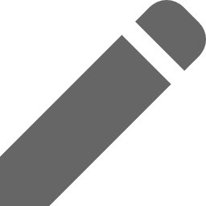
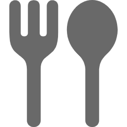

ただいま転職活動中
希望職種：バックエンドエンジニア
学習言語：Ruby on Rails
希望勤務地：大阪、東京
興味を持って頂けましたらご連絡ください
-
パーソナル情報
中満望実（なかみつのぞみ）
1997年01月31日生まれ / 23歳 -
経歴
・2019年3月 ： 同志社大学商学部商学科 卒業
・2020年4月 ：飲食業界に就職
「お客様の満足や感動を大切にする」会社ポリシーに惹かれ入社を決意しました。
入社1年目で社員食堂＆居酒屋部門の店長アシスタントとして配属されました。
店舗の課題はコロナウイルスの影響で来客数が７割減。
それに対しターゲットを明確にしたランチイベントを企画実行し、
多くの部署と交渉の上実現しました。
これにより私はその年に最高評価を頂きました。
真剣に課題と向き合い、毎日毎日考えて改善策を閃きました。
常に頭を使い改善策を考える癖がこの時身につきました。
-
 2019年に学習したプログラミングスキル
2019年に学習したプログラミングスキル
5月16日から現在まで1日も休む事なく継続して学習を続けています5月16日〜6月27日( 約1.5ヶ月) ： HTML,CSS,JavaScript(独学）
6月27日〜7月31日( 約１ヶ月) ： JavaScript,jQuery（メンター利用）
8月1日〜8月31日( 約１ヶ月) ： Ruby,Ruby on Rails, git （独学）
9月1日〜現在 ： Ruby,Ruby on Rails（スクール利用）
成果物については下記参照ください
-
 どの様な業務をしたいか
どの様な業務をしたいか
多くの人にとって身近な悩みや不満を解消する画期的なアプリの開発に携わりたいです。
その為に必要な言語やスキルを常に取り入れていける環境で働きたいです。
-
どの様なエンジニアになりたいか
変化を起こして価値を生み出し、多くの人の役に立ちたい
世界で通用する人材になりたい1.変化を起こす
今まで当たり前と思われていた事を疑い、常に改善案を考え、
とにかくどんどん実行していきたいです。
現職でも、常に新しいことに果敢に挑戦する事で来客UPや職場環境改善に
貢献しました。
新しい事に挑戦する事は非常に刺激的ですし、そこから見えてくる新しい景色が
あると考えています。それにより自分自身も大きく変化していけると思います。
2.価値を生む
価値とはそのサービスや商品を支持してくれる人の数だと考えています。
現職では、店舗にあるヒト、モノ、サービスの全てがお客様の満足に繋がると
意識し、従業員教育や接客に力を入れて参りました。
エンジニアになっても同様にユーザー、クライアントの満足を大切にしていきたい
と考えております。
3.影響力を持つ
私が挑戦の中で得た情報やスキルは、どんどん他者へ提供していこう
と考えております。
SNSや技術記事を通じた情報発信を積極的に実行していきます。
それにより1人でも多くの人に影響を与える事ができ、それが私の志す
変化による価値提供に必要な条件だと考えています。
4.グローバル人材になりたい
グローバル人材とは、商談相手やチームメイトと良好なコミュニケーションを築きながら背景や環境を問わず結果を生み出せる人材だと考えています。
技術力だけに長けた人材ではなく、持ち前の語学力やコミュニケーション能力を生かして将来的には、チームの成果を導く存在になりたいです。
国や経歴が異なる人たちと仕事をする事で、自身のコミュニケーションや価値観の幅を広げる事ができると考えています。
 Skill
Skill
-

HTML
-

CSS
-

javascript
-

Ruby
-

Rails
-

Github
-
TOEIC880
 Works
Works

-
大学時代
体育会ラクロス部に所属チーム成績
2018年 関西ラクロスリーグ戦一部リーグ優勝、全日本学生ラクロス選手権２位
2019年 関西ラクロスリーグ戦一部リーグ２位チームでの役割
・オフェンスポジションでプレーヤーとして4年時には公式戦で活躍。
・チームのムードメーカー（声出し、下級生のモチベーション維持）
・合宿、飲み会等の幹事を務め、チームの結束力向上に成功。
・スカウティング班班長として３０人の後輩を束ね、撮影ビデオや分析データの質向上に貢献。
-
英語学習
2019年9月、TOEIC 880点取得
2019年4月1日から1日も休まず英語学習を継続中！
現時点の英語力
・TOEIC８８０レベルを維持
・日常会話であれば外国人と楽しく会話が可能。
・基本的な接客を英語で可能
・英語字幕があれば、映画を楽しむことが可能。
・HTMLとCSSは英語版progateを利用して習得。
学習方法
時間の使い方を工夫。特に通勤時間のルーティン、休日の時間の使い方を綿密に計画
2019年4月〜2019年8月
・TOEIC教材、英単語帳を中心にインプット中心の学習を進める2019年9月〜
実践的に使える英語習得のために、アウトプット中心の学習へ
・ ミートアップや英会話カフェに頻繁に足を運び、英語を使う機会を増やす。
・外国人の友達を作り遊びに行く。
・英語で日記を書く
・瞬間英作文を毎日行う
・海外ドラマやYouTubeを英語字幕で見る。
・日本の漫画を英語で読む、洋書を速読する。
・BillboardやCNNなど興味がある英語記事を毎日読む。
・外国人の友達を作り遊びに行く。
 Contact
Contact
Japan,Tokyo
 Around the web
Around the web